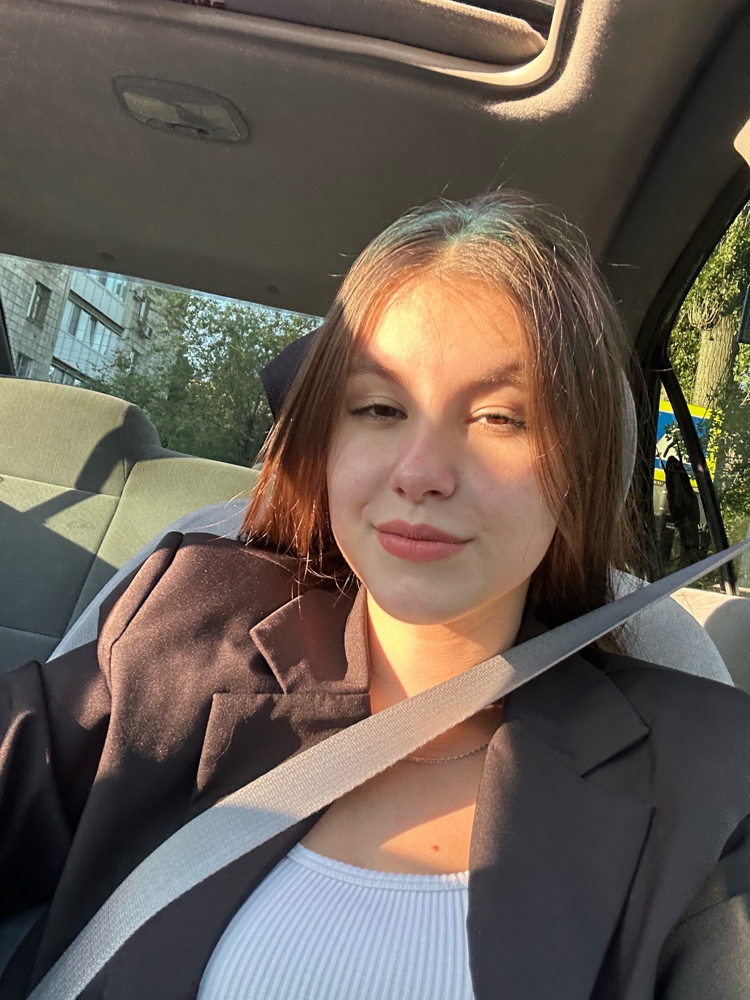

Зламанюк Анастасия Александровна
ИСП-231
Обо мне
Привет! Мне 20 лет и являюсь студенткой ВФ ВолГУ направления "Информационные системы и программирование". Я очень люблю животных и мечтаю когда-нибудь открыть свой приют. А ещё мне нравятся старые японские машины, поэтому еще одна моя мечта восстановить Mitsubishi Galant VIII, который уже есть и купить себе Toyota Chaser.
Мои навыки
- Умею шевелить ушами
Контакты
Email: nastya.zlamanyuk@bk.ru
Телефон: +7(902)360-89-44